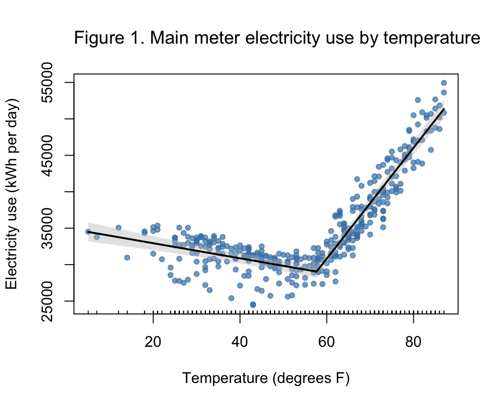
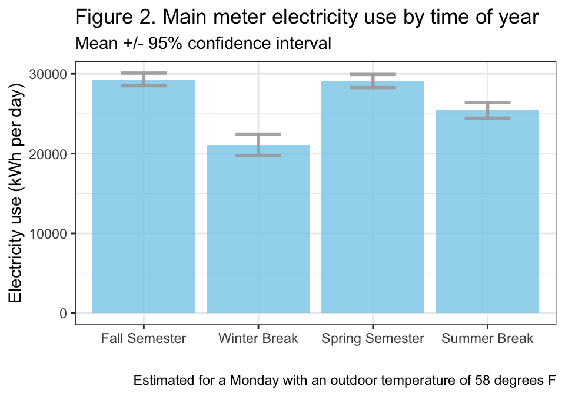
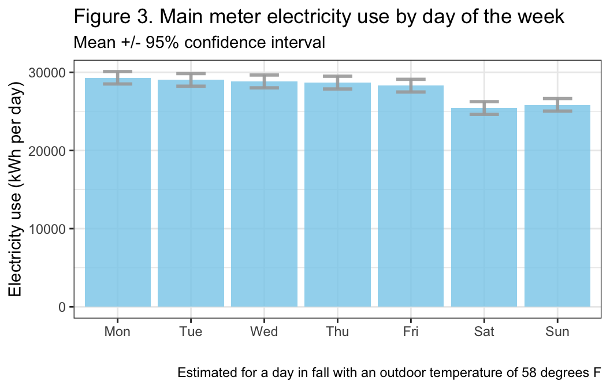

Last updated: 2026-08-15
Checks: 7 0
Knit directory: dickinson_power/
This reproducible R Markdown analysis was created with workflowr (version 1.7.2). The Checks tab describes the reproducibility checks that were applied when the results were created. The Past versions tab lists the development history.
Great! Since the R Markdown file has been committed to the Git repository, you know the exact version of the code that produced these results.
Great job! The global environment was empty. Objects defined in the global environment can affect the analysis in your R Markdown file in unknown ways. For reproduciblity it’s best to always run the code in an empty environment.
The command set.seed(20260107) was run prior to running
the code in the R Markdown file. Setting a seed ensures that any results
that rely on randomness, e.g. subsampling or permutations, are
reproducible.
Great job! Recording the operating system, R version, and package versions is critical for reproducibility.
Nice! There were no cached chunks for this analysis, so you can be confident that you successfully produced the results during this run.
Great job! Using relative paths to the files within your workflowr project makes it easier to run your code on other machines.
Great! You are using Git for version control. Tracking code development and connecting the code version to the results is critical for reproducibility.
The results in this page were generated with repository version a292417. See the Past versions tab to see a history of the changes made to the R Markdown and HTML files.
Note that you need to be careful to ensure that all relevant files for
the analysis have been committed to Git prior to generating the results
(you can use wflow_publish or
wflow_git_commit). workflowr only checks the R Markdown
file, but you know if there are other scripts or data files that it
depends on. Below is the status of the Git repository when the results
were generated:
Ignored files:
Ignored: .DS_Store
Ignored: .Rhistory
Ignored: .Rproj.user/
Ignored: analysis/.DS_Store
Ignored: analysis/.Rhistory
Ignored: analysis_to-fix/.DS_Store
Ignored: data/.DS_Store
Ignored: data/FY25 Main Meter Data.xlsx
Ignored: data/building_list_FY25_updated.xlsx
Ignored: data/graph_data_life_exp.csv
Ignored: data/housing_counts.csv
Ignored: keys/.DS_Store
Ignored: output/annual_kwh.csv
Ignored: output/building_check.csv
Ignored: output/building_check.xlsx
Ignored: output/buildings_graph.csv
Ignored: output/daily_kwh.csv
Ignored: output/kwh_academic_2026-03-16.csv
Ignored: output/kwh_academic_2026-03-17.csv
Ignored: output/kwh_academic_2026-03-18.csv
Ignored: output/kwh_academic_2026-03-22.csv
Ignored: output/kwh_academic_2026-03-23.csv
Ignored: output/kwh_academic_2026-03-25.csv
Ignored: output/kwh_academic_2026-03-30.csv
Ignored: output/kwh_academic_2026-04-07.csv
Ignored: output/kwh_academic_2026-04-13.csv
Ignored: output/kwh_academic_2026-04-26.csv
Ignored: output/kwh_annual.csv
Ignored: output/kwh_annual_2026-03-04.csv
Ignored: output/kwh_annual_2026-03-12.csv
Ignored: output/kwh_annual_2026-03-16.csv
Ignored: output/kwh_annual_2026-03-17.csv
Ignored: output/kwh_annual_2026-03-18.csv
Ignored: output/kwh_annual_2026-03-22.csv
Ignored: output/kwh_annual_2026-03-23.csv
Ignored: output/kwh_annual_2026-03-25.csv
Ignored: output/kwh_annual_2026-03-30.csv
Ignored: output/kwh_annual_2026-04-07.csv
Ignored: output/kwh_annual_2026-04-13.csv
Ignored: output/kwh_annual_2026-04-26.csv
Ignored: output/kwh_annual_20260225.csv
Ignored: output/kwh_annual_20260226.csv
Ignored: output/kwh_daily.csv
Ignored: output/kwh_daily_2026-03-04.csv
Ignored: output/kwh_daily_2026-03-12.csv
Ignored: output/kwh_daily_2026-03-16.csv
Ignored: output/kwh_daily_2026-03-17.csv
Ignored: output/kwh_daily_2026-03-18.csv
Ignored: output/kwh_daily_2026-03-22.csv
Ignored: output/kwh_daily_2026-03-23.csv
Ignored: output/kwh_daily_2026-03-25.csv
Ignored: output/kwh_daily_2026-03-30.csv
Ignored: output/kwh_daily_2026-04-07.csv
Ignored: output/kwh_daily_2026-04-13.csv
Ignored: output/kwh_daily_2026-04-26.csv
Ignored: output/kwh_daily_20260225.csv
Ignored: output/kwh_daily_20260226.csv
Ignored: output/kwh_main_annual.csv
Ignored: output/kwh_main_daily.csv
Untracked files:
Untracked: analysis/conclusions.Rmd
Untracked: analysis/methods.Rmd
Unstaged changes:
Modified: analysis/Report_II_Academic.Rmd
Modified: analysis/Report_II_Administrative-2.Rmd
Modified: analysis/Report_II_Community.Rmd
Modified: analysis/Report_II_Med-Residential-Building.Rmd
Modified: analysis/Report_II_Other.Rmd
Modified: analysis/Report_II_Residential-L.Rmd
Modified: analysis/Report_II_Small_Residence_Halls.Rmd
Modified: analysis/about.Rmd
Modified: analysis/campus_summary.Rmd
Modified: analysis/data_wrangling_final.Rmd
Modified: analysis/index.Rmd
Note that any generated files, e.g. HTML, png, CSS, etc., are not included in this status report because it is ok for generated content to have uncommitted changes.
These are the previous versions of the repository in which changes were
made to the R Markdown (analysis/main_meter_clean.Rmd) and
HTML (docs/main_meter_clean.html) files. If you’ve
configured a remote Git repository (see ?wflow_git_remote),
click on the hyperlinks in the table below to view the files as they
were in that past version.
| File | Version | Author | Date | Message |
|---|---|---|---|---|
| Rmd | 9a86998 | maggiedouglas | 2026-05-05 | update reference |
| html | 9a86998 | maggiedouglas | 2026-05-05 | update reference |
| Rmd | ed8bc40 | maggiedouglas | 2026-05-05 | more updates… |
| html | ed8bc40 | maggiedouglas | 2026-05-05 | more updates… |
Note for students: This page is meant to show you an example of a completed section for Report Part II, with code and intermediate output hidden. This is to give you a sense of what the section will look like in the final report.
The “main meter” records electricity use in around 40 buildings in the core of campus. These buildings have a range of uses including academic, administrative, and residential functions. Importantly, the main meter also includes the Central Energy Plant in Kaufman Hall. Together, the buildings on the main meter account for 59% of square footage on campus and 68% of electricity use at an estimated cost of $1.2 million and 3504 MT CO2-e in fiscal year 2025 (FY25; see Electricity summary: All buildings). In FY25 the buildings on the main meter used 10.4 kWh per square foot, very similar to values typical of U.S. College/University buildings (median 10.3 kWh/sqft/yr; EIA 2022).
Going into this analysis, I believed that electricity use on the main meter would be strongly related to temperature and building occupancy. Because electricity is involved in heating and cooling, I expected electricity use to decrease with temperature in the heating range and increase with temperature in the cooling range. The campus relies more heavily on electricity for cooling than heating (personal communication with Mike Kiner, spring 2026), so I believed the relationship would be stronger in the cooling range. I also expected that electricity use would be lower during breaks than during the academic year, when buildings are more heavily used. Finally, given that the main meter includes a diversity of buildings with different use patterns, I did not expect a strong relationship between electricity use and day of the week.
In a segmented regression model, daily electricity use on the main meter was significantly related to day (F6,352 = 34.6, P < 0.001), period (F3,352 = 55.2, P < 0.001), temperature below 58 oF (F1,352 = 14.4, P < 0.001), and temperature above 58 oF (F1,352 = 353.5, P < 0.001). The model explained 87% of the variation in daily electricity use on the main meter in FY25 (R2 = 0.87).
There was a significant non-linear relationship between electricity use and temperature, with a break point at 58 oF (Figure 1). During the heating season (temperatures below 58 oF), electricity use declined by 103 kWh (+/- 15 kWh) per oF. During the cooling season (temperatures above 58 oF), electricity use increased by 761 kWh (+/- 24 kWh) per oF.
# plot original data with fit
plot(mod_seg, vcov = vcovHAC(mod_seg),
col = 'black', res = TRUE, conf.level = .95, shade = T,
res.col = adjustcolor("steelblue", alpha.f = 0.7), # set color of data + transparency
xlab = "Temperature (degrees F)", ylab = "Electricity use (kWh per day)") # label axes
title("Figure 1. Main meter electricity use by temperature", # how to set the title in base R plotting function
adj = 0, cex.main = 1.2, font.main = 1) 
| Version | Author | Date |
|---|---|---|
| ed8bc40 | maggiedouglas | 2026-05-05 |
Electricity use during spring did not differ significantly from use during fall (Figure 2; P = 0.70). Compared to fall and spring, electricity use during winter break was reduced by 28%. Interestingly, after accounting for temperature, electricity use over summer break was reduced by 13%.
# Create a data frame with new values (must match model's predictor names)
period_data <- data.frame(ave_temp = 58, # set temp to the median in the dataset
day = "Mon", # set day as Monday
period = c("Fall Semester","Winter Break", # include all levels
"Spring Semester","Summer Break"))
# Generate estimated means + confidence interval
conf_period <- as.data.frame(predict(mod_seg, # store as a data frame, generate predictions
vcov = vcovHAC(mod_seg), # address violations
newdata = period_data, # feed in the new data
interval = "confidence", level = 0.95)) %>% # interval
mutate(period = c("Fall Semester","Winter Break", # add period back into data frame
"Spring Semester","Summer Break"))
conf_period$period <- factor(conf_period$period,
levels = c("Fall Semester","Winter Break", # add period back into data frame
"Spring Semester","Summer Break"))
# Calculate changes from fall to other periods
fall <- filter(conf_period, period == "Fall Semester")
summer <- filter(conf_period, period == "Summer Break")
winter <- filter(conf_period, period == "Winter Break")
# fall vs. summer
#(fall$fit - summer$fit)/fall$fit*100
# fall vs. winter
#(fall$fit - winter$fit)/fall$fit*100
# Graph with confidence intervals
ggplot(conf_period) +
geom_bar(aes(x=period, y=fit), stat="identity", fill="skyblue", alpha=0.8) +
geom_errorbar( aes(x=period, ymin=lwr, ymax=upr), # feed in X + confidence interval
width=0.4, colour="darkgray", alpha=0.9, size=1) + # adjust format
theme_bw() +
labs(x = "", y = "Electricity use (kWh per day)",
title = "Figure 2. Main meter electricity use by time of year",
subtitle = "Mean +/- 95% confidence interval",
caption = "Estimated for a Monday with an outdoor temperature of 58 degrees F")
| Version | Author | Date |
|---|---|---|
| ed8bc40 | maggiedouglas | 2026-05-05 |
Unexpectedly, the model revealed differences in electricity use over the week. After accounting for other factors, electricity use was fairly similar on weekdays Monday to Thursday but 3.4% lower on Fridays and 12-13% lower on Saturdays and Sundays (Figure 3).
# Create a data frame with new values (must match model's predictor names)
day_data <- data.frame(ave_temp = 58,
day = c("Mon","Tue","Wed","Thu","Fri","Sat","Sun"),
period = "Fall Semester")
# Generate estimated means + confidence interval
conf_day <- as.data.frame(predict(mod_seg, vcov = vcovHAC(mod_seg),
newdata = day_data,
interval = "confidence", level = 0.95)) %>%
mutate(day = factor(c("Mon","Tue","Wed","Thu","Fri","Sat","Sun"),
levels = c("Mon","Tue","Wed","Thu","Fri","Sat","Sun")))
# Calculate changes from Monday to other days
mon <- filter(conf_day, day == "Mon")
fri <- filter(conf_day, day == "Fri")
sat <- filter(conf_day, day == "Sat")
sun <- filter(conf_day, day == "Sun")
# Mon vs Fri
#(mon$fit - fri$fit)/mon$fit*100
# Mon vs Sat
#(mon$fit - sat$fit)/mon$fit*100
# Mon vs Sun
#(mon$fit - sun$fit)/mon$fit*100
# Graph
ggplot(conf_day) +
geom_bar(aes(x=day, y=fit), stat="identity", fill="skyblue", alpha=0.8) +
geom_errorbar( aes(x=day, ymin=lwr, ymax=upr), width=0.4, colour="darkgray", alpha=0.9, size=1) +
theme_bw() +
labs(x = "", y = "Electricity use (kWh per day)",
title = "Figure 3. Main meter electricity use by day of the week",
subtitle = "Mean +/- 95% confidence interval",
caption = "Estimated for a day in fall with an outdoor temperature of 58 degrees F")
| Version | Author | Date |
|---|---|---|
| ed8bc40 | maggiedouglas | 2026-05-05 |
The statistical model for electricity use on the main meter including temperature, time of year, and day of the week explained nearly 90% of daily variation in electricity use in FY25. This gives the model strong potential to support financial planning as the cost of electricity rises and the climate changes. For example, Cumberland County is likely to become 2-11 oF warmer by late century (Leary, 2025). The model suggests that a 3 oF increase in summer temperature will translate into an additional 2283 kWh per day and $183 per day at current rates. I recommend testing the predictive power of the model by using it to predict electricity use on the main meter in FY26 and then comparing predictions to realized electricity usage.
As expected, temperature was an important variable correlated with electricity usage on the main meter, and the relationship was stronger during temperatures in the cooling range. The break point at 58 oF was a little bit lower than the standard of 65 oF (EIA, n.d.). The Central Energy Plant starts cooling at an external temperature of 62 oF (personal communication, Mike Kiner, April 2026), which may help to explain this discrepancy. Furthermore, many modern buildings have a balance point below 65 oF due to insulation combined with internal heat generated by occupants, electronic devices, and solar capture (Heizer & Thomas 2022; Utzinger & Wasley 2012).
After controlling for temperature, this analysis found substantial reductions (12-28%) in electricity use on the main meter associated with academic breaks and weekends. This finding suggests that existing building automation systems and scheduled electricity reductions were successful in reducing the use of electricity during low-occupancy periods in FY25. I recommend continuing building management in this vein and considering whether there may be further opportunities to schedule reductions, particularly in summer. This analysis could be repeated in future years to assess the efficacy of such interventions.
Energy Information Administration (EIA). (2022). 2018 Commercial Buildings Energy Consumption Survey (CBECS). https://www.eia.gov/consumption/commercial/
Energy Information Administration (EIA). (n.d.). 2018 Units and calculators explained: Degree days. https://www.eia.gov/energyexplained/units-and-calculators/degree-days.php
Heizer, M., & Thomas, K. (n.d.). Heating Degree Days Relevancy: Why a 55-Degree Balance Point is Better than 65 for Building Energy Analysis in Heating Dominant Climates. ASHRAE Transactions, 128(2), 300–308. Retrieved https://research.ebsco.com/c/rd5flh/search/details/qdyc7pcbcz?request-context=plink&db=a9h
Leary, N. (2025). Climate Risks and Resilience in Cumberland County: Synthesis Report. Center for Sustainability Education, Dickinson College. https://www.dickinson.edu/info/20052/sustainability/4371/climate_resilience/2
Utzinger, M., & Wasley, J. (2012). Vital signs curriculum materials project: Building balance point. Johnson Controls Institute for Environmental Quality in Architecture, School of Architecture and Urban Planning, University of Wisconsin- Milwaukee. Archived from the original (PDF) on 12 June 2012. https://web.archive.org/web/20120612033218/http://arch.ced.berkeley.edu/vitalsigns/res/downloads/rp/balance_point/balance_point_big.pdf
This section was developed entirely by Prof. Maggie Douglas, as an example for the students in the class. Prof. Douglas did not use generative AI in developing the code or text in this section.
sessionInfo()R version 4.6.0 (2026-04-24)
Platform: x86_64-apple-darwin20
Running under: macOS Ventura 13.7.8
Matrix products: default
BLAS: /Library/Frameworks/R.framework/Versions/4.6-x86_64/Resources/lib/libRblas.0.dylib
LAPACK: /Library/Frameworks/R.framework/Versions/4.6-x86_64/Resources/lib/libRlapack.dylib; LAPACK version 3.12.1
locale:
[1] en_US.UTF-8/en_US.UTF-8/en_US.UTF-8/C/en_US.UTF-8/en_US.UTF-8
time zone: America/New_York
tzcode source: internal
attached base packages:
[1] stats graphics grDevices utils datasets methods base
other attached packages:
[1] modelsummary_2.6.0 dotwhisker_0.8.6 sandwich_3.1-1 lmtest_0.9-40
[5] zoo_1.8-15 car_3.1-5 carData_3.0-6 tseries_0.10-61
[9] segmented_2.2-1 nlme_3.1-169 MASS_7.3-65 lubridate_1.9.5
[13] forcats_1.0.1 stringr_1.6.0 dplyr_1.2.1 purrr_1.2.2
[17] readr_2.2.0 tidyr_1.3.2 tibble_3.3.1 ggplot2_4.0.3
[21] tidyverse_2.0.0 workflowr_1.7.2
loaded via a namespace (and not attached):
[1] tidyselect_1.2.1 farver_2.1.2 S7_0.2.2
[4] fastmap_1.2.0 bayestestR_0.18.1 promises_1.5.0
[7] digest_0.6.39 timechange_0.4.0 estimability_2.0.0
[10] lifecycle_1.0.5 processx_3.9.0 magrittr_2.0.5
[13] compiler_4.6.0 rlang_1.2.0 sass_0.4.10
[16] tools_4.6.0 yaml_2.3.12 data.table_1.18.4
[19] knitr_1.51 labeling_0.4.3 curl_7.1.0
[22] TTR_0.24.4 RColorBrewer_1.1-3 abind_1.4-8
[25] withr_3.0.3 grid_4.6.0 datawizard_1.3.1
[28] git2r_0.36.2 xts_0.14.2 xtable_1.8-8
[31] emmeans_2.0.4 scales_1.4.0 insight_1.5.2
[34] mvtnorm_1.4-2 cli_3.6.6 rmarkdown_2.31
[37] generics_0.1.4 otel_0.2.0 rstudioapi_0.19.0
[40] performance_0.17.1 httr_1.4.8 tzdb_0.5.0
[43] parameters_0.29.2 cachem_1.1.0 splines_4.6.0
[46] marginaleffects_0.32.0 vctrs_0.7.3 jsonlite_2.0.0
[49] callr_3.7.6 hms_1.1.4 patchwork_1.3.2
[52] Formula_1.2-5 jquerylib_0.1.4 quantmod_0.4.29
[55] glue_1.8.1 stringi_1.8.7 gtable_0.3.6
[58] later_1.4.8 tables_0.9.35 quadprog_1.5-8
[61] pillar_1.11.1 htmltools_0.5.9 R6_2.6.1
[64] rprojroot_2.1.1 evaluate_1.0.5 lattice_0.22-9
[67] backports_1.5.1 httpuv_1.6.17 bslib_0.11.0
[70] Rcpp_1.1.1-1.1 gridExtra_2.3 whisker_0.4.1
[73] xfun_0.59 fs_2.1.0 getPass_0.2-4
[76] pkgconfig_2.0.3